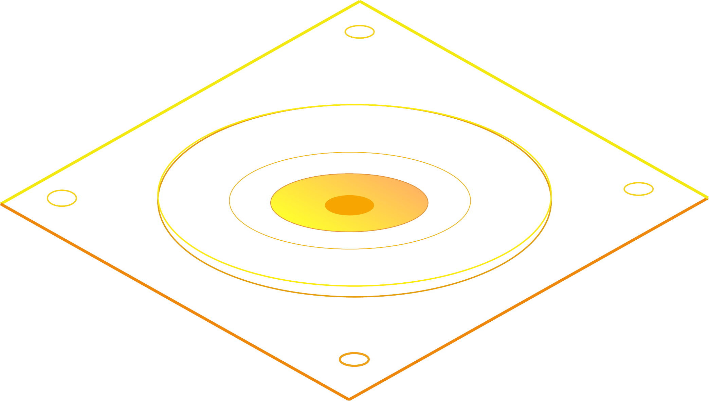

ISO's striking, vibrant 32x32 LED display synchronizes with the web to display the information that matters to you most in a unique manner. Listen to music while watching a beautiful visualization dance to the beat, get weather and calendar updates, or see the latest posts on the news and social media sites that you care about.
20 watts of pure power, delivering a stellar audio experience. Enjoy your favorite songs, listen to podcasts, and even get spoken updates on things like the temperature of your home and suggestions for restaurants to check out.

What's behind ISO? A Raspberry Pi and an Arduino Uno, packed with the highest quality electronics money can buy, are what makes ISO so powerful. Users can program the device to suit their needs, and all of the hardware is open-source. ISO's strength will come from the applications that users write for it, which will come together to create a truly unique and exciting experience.